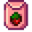
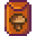

Cultivos:
Los Cultivos son plantas que crecen a partir de semillas para ser cosechadas con fines económicos, alimenticios o de regalo. Por lo general, cada cultivo es estacional. Sólo se puede plantar durante su estación designada, y cuando cambia de estación (después del día 28), el cultivo se marchita y muere. La excepción son los cultivos «multi-estacionales» (Fruta milenaria, Grano de café, Maíz, Girasol y Trigo), que seguirán creciendo en todas las estaciones indicadas.
Lo básico:
Monstruos:
Los Monstruos (de la Granja salvaje o activados por el Altar oscuro del terror en cualquier granja) no tienen efectos sobre los cultivos.
Cuervos:
Los Cuervos pueden comerse los cultivos cuando hay más de 15 cultivos en crecimiento y no hay ningún Espantapájaros en su alcance.
Animales de granja:
Los animales de granja nunca pisotean ni destruyen los cultivos. Pueden entorpecer las labores de siembra o cosecha, pero nunca causan daños a los cultivos.
Plantar y Fertilizar:
La tierra debe ser arada con una Azada antes de fertilizarla o plantar un cultivo, una actividad que consume parte de la energía diaria del jugador, como se refleja en la barra de energía. Una casilla puede ser regada (usando una Regadera) solo si el suelo ha sido arado, lo cual consume más energía.
Las semillas y los fertilizantes son puestas en una tierra arada individualmente usando el clic izquierdo, o múltiples casillas presionando el clic izquierdo o clic derecho y moviendo el cursor y/o el jugador. Como plantar cultivos o fertilizar no requieren ninguna herramienta, estas actividades no consumen energía.
Sólo se puede utilizar un tipo de Fertilizante a la vez en cada casilla. Algunos fertilizantes tienen que ser colocados antes de plantar la semilla, otros tipos pueden ser colocados antes o después de plantar la semilla. Se pueden regar los cultivos en cualquier momento después de arar la tierra, y también se puede regar antes o después de usar el fertilizante y/o plantar la semilla, sin importar el orden.
Cultivos en espaldera:
Algunos cultivos crecen en una espaldera, que es un enrejado metálico o de madera. Una vez plantado, no se puede pasar a través de una espaldera, por lo que es necesario planificar adecuadamente la disposición de los cultivos. Los cultivos en espaldera se pueden atravesar una vez que están muertos.Los cultivos en espaldera disponibles son la Judía verde, Lúpulo, y Uva.
Tiempos de crecimiento:
Los tiempos de crecimiento que se muestran en esta página (y en el juego) excluyen el día en que se plantaron las semillas. Si se planta en la primera de una temporada, una cosecha de 5 días estará lista para la cosecha el día 6, no el día 5. En este caso, el número se puede considerar como la cantidad de noches necesarias para hacer crecer la cosecha.
Los Fertilizantes y la profesión Agricultor no se tienen en cuenta en esta página, pero los efectos pueden ser vistos en las páginas individuales de cada cultivo.
Los cultivos deben regarse todos los días para un crecimiento máximo. Si no se riega durante un día, la cosecha no crecerá. Los cultivos no regados no mueren, pero tampoco crecerán.
Si se planta una semilla en suelo no regado y no se riega el mismo día, no crecerá esa noche. El crecimiento comenzará la noche siguiente. Los tiempos de cultivo en esta página asumen que las semillas se riegan el día en que se plantan.Plantar después de la medianoche no impone una penalización (todavía cuenta como si se hubiera plantado en el día actual).
Final de temporada:
El día 1 de cada estación, todos los cultivos que ya no están en la temporada correspondiente se marchitarán y morirán, dejando una cosecha muerta. Cuando se deja una cosecha muerta al comienzo de una temporada, mantendrá la tierra en la que se plantó arada, lo que puede reducir la cantidad de casillas por arar y del riego que se debe realizar al inicio de cada temporada. Los cultivos muertos se pueden eliminar con una guadaña.
Los cultivos de varias estaciones que todavía están en temporada (es decir, el Maíz sembrado en Verano cuando hace la transición al Otoño) no se marchitarán y simplemente continuarán creciendo. Sin embargo, los cultivos completamente desarrollados que están listos para la cosecha se marchitarán y morirán al pasar a una nueva temporada.
Cultivos gigantes:
Las Coliflores, Melones, Calabazas, Melones de polvo, Frutos Qi plantadas en un patrón de 3x3 casillas pueden combinarse de forma aleatoria en una cosecha gigante. Los cultivos gigantes dejan caer 15-21 objetos de calidad normal cuando se cosechan con cualquier Hacha recibiendo tres golpes.
Al comienzo de cada día, cada conjunto de casillas 3x3 tiene un 1% de probabilidad de convertirse en un cultivo gigante, siempre y cuando el cultivo del centro haya sido regado y todos los cultivos adyacentes hayan crecido en su totalidad y sean del mismo tipo. Las cosechas gigantes no aparecerán necesariamente el día en que los cultivos terminen de crecer; puede ocurrir cualquier día en que se cumplan esos criterios.
Los cultivos gigantes no se mueren al culminar una Estación como los otros cultivos, la tierra debajo de un cultivo gigante puede volverse "no arada", lo que hace que se pierda cualquier Fertilizante. Los cultivos gigantes no pueden crecer en el Invernadero, ni utilizando Macetas, ni en la Isla Jengibre.
| Cultivos gigantes | ||||
|---|---|---|---|---|
| Coliflor | Melón | Calabaza | Melón de polvo | Fruto Qi |
 |
 |
 |
 |
 |
Calidad del cultivo:
La calidad de los cultivos tiene cuatro niveles: Normal,  Plata,
Plata,  Oro e
Oro e  Iridio. La calidad se determina en el momento de la cosecha. Normalmente, las cosechas son casi todas de calidad normal, con algunas cosechas de una calidad plata u oro. La calidad promedio puede aumentarse plantando semillas en tierra fertilizada. Hay que tener en cuenta que la calidad iridio solo es posible con el Fertilizante de lujo. Aumentando la habilidad de Agricultura también aumenta la posibilidad de recoger una cosecha de calidad. Si una Semilladora convierte un cultivo de alta calidad en semillas, no significa que estas semillas produzcan cultivos de alta calidad cuando sean cosechados.
Iridio. La calidad se determina en el momento de la cosecha. Normalmente, las cosechas son casi todas de calidad normal, con algunas cosechas de una calidad plata u oro. La calidad promedio puede aumentarse plantando semillas en tierra fertilizada. Hay que tener en cuenta que la calidad iridio solo es posible con el Fertilizante de lujo. Aumentando la habilidad de Agricultura también aumenta la posibilidad de recoger una cosecha de calidad. Si una Semilladora convierte un cultivo de alta calidad en semillas, no significa que estas semillas produzcan cultivos de alta calidad cuando sean cosechados.
Hay que tener en cuenta en cuenta que para los objetos de recolección cultivados a partir de semillas silvestres, la calidad de los objetos está determinada por el nivel de la habilidad en Recolección, no por la habilidad de Agricultura, lo que hace que los artículos de recolección de calidad iridio sean posibles solo con la profesión Botánico.
Siempre se obtienen precios superiores vendiendo cosechas de calidad superior, así como también dan mejores beneficios de Energía y Salud cuando se comen. Al darse como regalos a un Aldeano al que le gusta o ama dicha cosecha, una con calidad de oro o iridio dará una mayor puntuación en Amistad. La calidad de la cosecha no tiene efecto en la energía o salud obtenidas por platos cocinados ni tampoco en la calidad de los Productos artesanales fabricados.
La estrella de calidad de un cultivo en el inventario se anima cuando es de la más alta calidad posible (iridio).Para cultivos que producen múltiples productos (por ejemplo: el Grano de café, el Arándano, y la Grosella), los fertilizantes; Básico, Deluxe y De lujo solo afectan el primer cultivo producido. Por lo tanto, solo 1 de 4 granos de café es afectado en cada cosecha; solo 1 de 3 arándanos es afectado, etc.
Oro por día
Los cálculos no tienen en cuenta los Fertilizantes ni las profesiones de Labrador o Agricultor. Las variaciones se indican en cada tabla o debajo de ella, si es aplicable. Se asume que el cultivo se riega el día de la siembra.
La fórmula general es: Ganancia mínima por día = ((Cosechas máximas x Precio de venta por cosecha) - Precio de la semilla) / Días de crecimiento
Días de crecimiento = Días para madurar + ((Nº Cosecha máxima - 1) x Días para volver a crecer)
Los Días para madurar y los Días para volver a crecer se indican en cada tabla.
La Cosecha máxima suele ser 1, pero para los cultivos que siguen produciendo después de la primera cosecha es el número total que puede ser cosechado durante su/s estación/es.
Normalmente, el Precio por objeto cosechado es el mismo que el precio de venta de un cultivo de calidad normal. Los objetos extras no se toman en cuenta ya que es raro que aparezcan, salvo en el caso de la Patata. La probabilidad de que aparezca una patata extra es del ≈25%, mucho mayor que cualquier otro cultivo. Por tanto, el Precio por objeto cosechado es de 1.25 x 80 en vez de 1 x 80.
En el caso de los cultivos que siempre dan más de un objeto por cosecha (Grano de café, Arándano o Grosella), el Precio de venta por objeto es igual a la Cosecha máxima x Precio de un objeto.
| Ejemplo: Grosellas |
|---|
| Cosecha máxima = 5 |
Precio por cosecha = 2 grosellas x  75 = 150 75 = 150 |
| Precio de la semilla = 240 |
| Días de crecimiento = 7 + ((5 - 1) x 5) = 27 |
| Oro por día = (5 x 150 - 240) / 27 = 18,89 |
  Semillas silvestres:
Las semillas silvestres pueden ser fabricadas a partir de plantas recolectadas, una vez hayas aprendido la receta en el nivel apropiado de Recolección (Primaverales en el nivel 1, Veraniegas en el nivel 4, Otoñales en el nivel 6, e Invernales en el nivel 7). Cada receta producirá 10 paquetes de semillas.
Cuando se plantan, las semillas silvestres producirán aleatoriamente una de las plantas recolectables de dicha estación. Independientemente de lo que acabe creciendo, todas las semillas silvestres tardan lo mismo en madurar (7 días, sin contar el día en que se plantan). Los cuervos no atacan a los cultivos de semillas silvestres, por lo que no es necesario utilizar espantapájaros.
Como estas semillas producen cultivos de Recolección, pueden ser de calidad de iridio si la profesión Botánico ha sido elegida.
Aca van imagenes y cuadros
 Semillas variadas:
Semillas variadas:
Aquí hay un poco de todo. ¡Plántalas y a ver qué sale!
Las semillas variadas son un tipo de semilla que pueden ser plantadas en cualquier estación, excepto en Invierno, para crecer en un cultivo específico de esa estación. Pueden ser encontradas aleatoriamente mientras cortas Hierbajos con una Guadaña, arando tierra con una Azada, o desde la Semilladora. La Granja forestal tiene un tipo único de hierbajo que siempre otorgará semillas variadas cuando la destruyas.
Las semillas variadas se convertirán en una de las siguientes semillas cuando hayan sido plantadas. Tener en cuenta que las semillas variadas pueden convertirse en alcachofa durante el Año 1, a pesar del hecho que las semillas de alcachofas no están disponibles hasta el Año 2.
| Estación | Semillas |
|---|---|
| Primavera |
|
| Verano |
|
| Otoño |
|
| Invierno | Ninguna (excepto en el Invernadero o con Macetas). |
| Isla Jengibre |
|
 Semillas de piña
Semillas de piña Productos artesanales:
Las cosechas se pueden transformar en Productos Artesanales para aumentar su valor de venta. La mayoría de las Frutas y Vegetales, así como el Jengibre, pueden procesarse en Mermeladas y Encurtidos a través de una Envasadora, o en Vino y Zumo a partir de un Barril. Usando también un Barril, el Lúpulo y el Trigo se pueden transformar en Cerveza pálida o Cerveza y el Grano de café en Café. Las Hojas de té pueden transformarse en Té verde mediante un Barril.
Logros:
Existen 2 Logros relacionados con los Envíos de cosechas:
- Policultivo (Envía 15 ejemplares de cada cultivo).
- Monocultivo (Envía 300 ejemplares de un cultivo).
Notas:
- Si el Trigo se planta a finales de Verano, seguirá estando presente a principios de Otoño, y evitará que la tierra labrada y el Fertilizante desaparezcan con el cambio de estación.
- En concreto, si se planta el 25 de Verano o antes y se deja sin cosechar hasta el 1 de Otoño, el trigo puede cosecharse rápidamente con la Guadaña el día 1 de Otoño, dejando el suelo labrado y fertilizado listo para los cultivos de Otoño. El trigo es una buena elección para esto, ya que sus semillas son muy baratas, fácilmente accesibles y rápidas de cultivar.
- Existe una pequeña posibilidad de que cualquier cultivo produzca una cosecha extra en el momento de la recolección.
Otras fuentes
- Stardew Profits: permite la comparación de cultivos en una amplia variedad de posibilidades en un formato compacto (en inglés).